Unravel
UnravelTake apart , read every , and ask what it does.
Select a highlighted word to see another option.
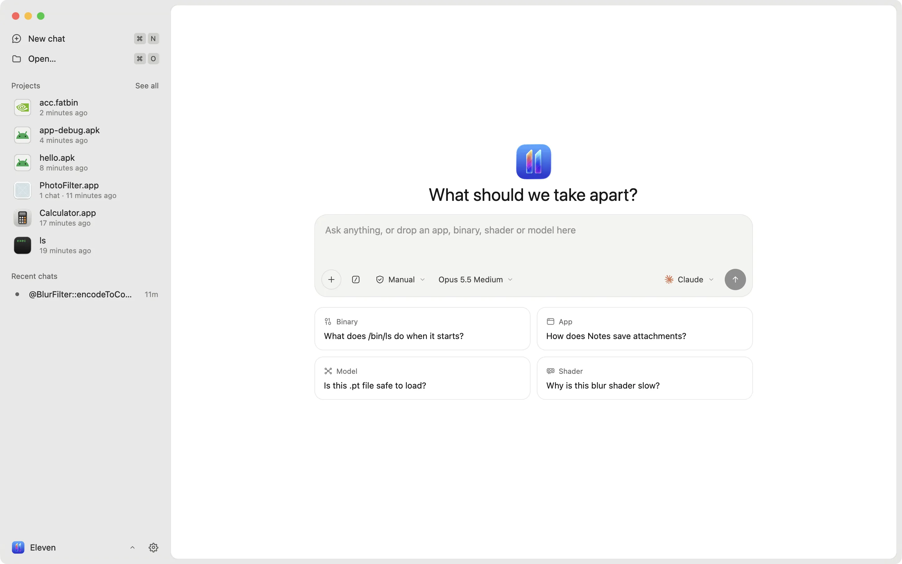
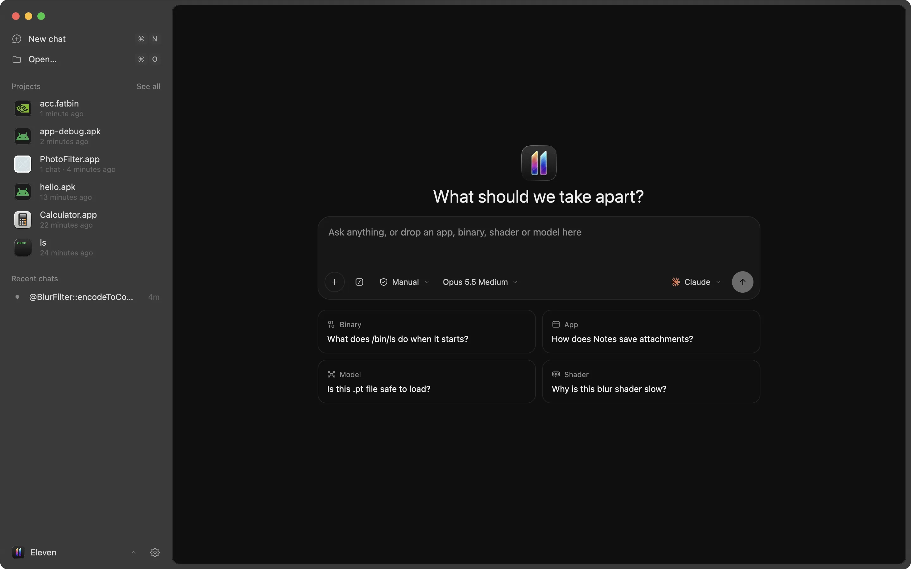
Works with the agent you already use.
Each agent gets the same tools inside Unravel: open a function, rename it, leave a note, suggest a patch. You watch every step next to the code.
 Claude
Claude Codex
Codex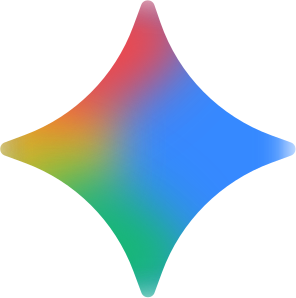
Gemini- Cursor
- OpenCode
- Aster
- ACPAny agent
Point at the exact function.
Type @ to search every function, string, bookmark and note in the file. The agent gets the name and the address with your question.
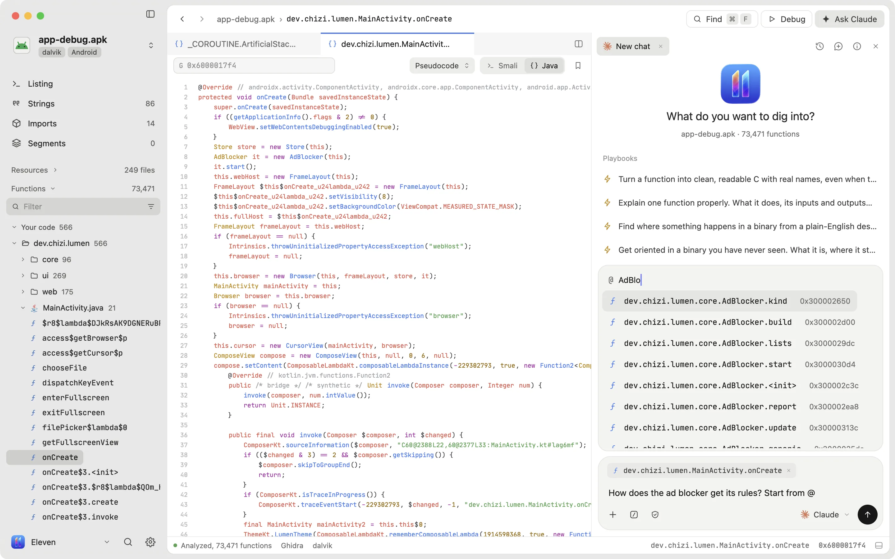
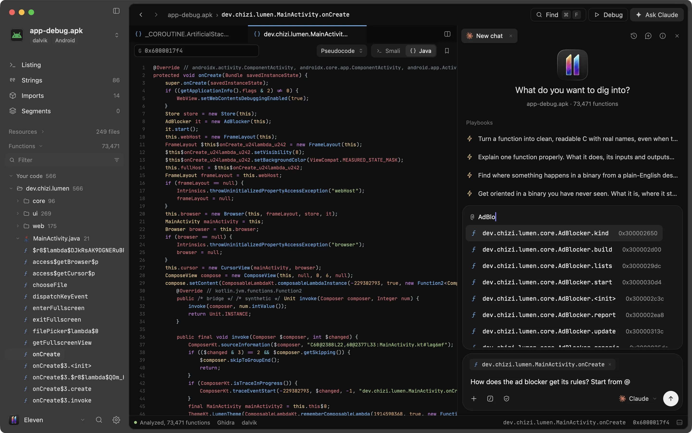
Ask about the lines you're reading.
Select lines in pseudocode, assembly or a source file and press ⌘L. The answer opens right under them. Ask a follow-up, pin it as a note, or carry on in the chat.
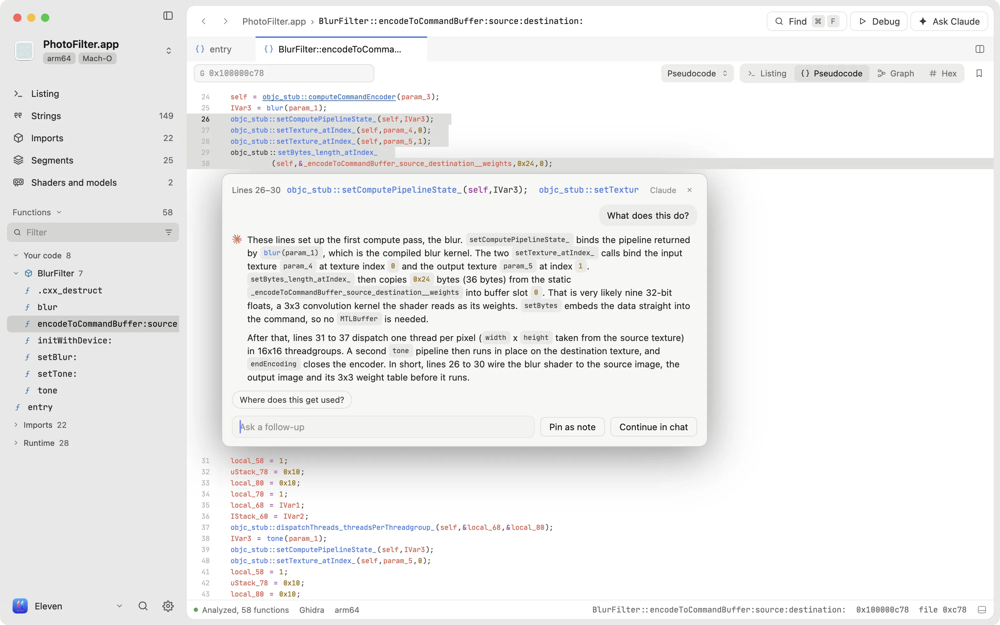
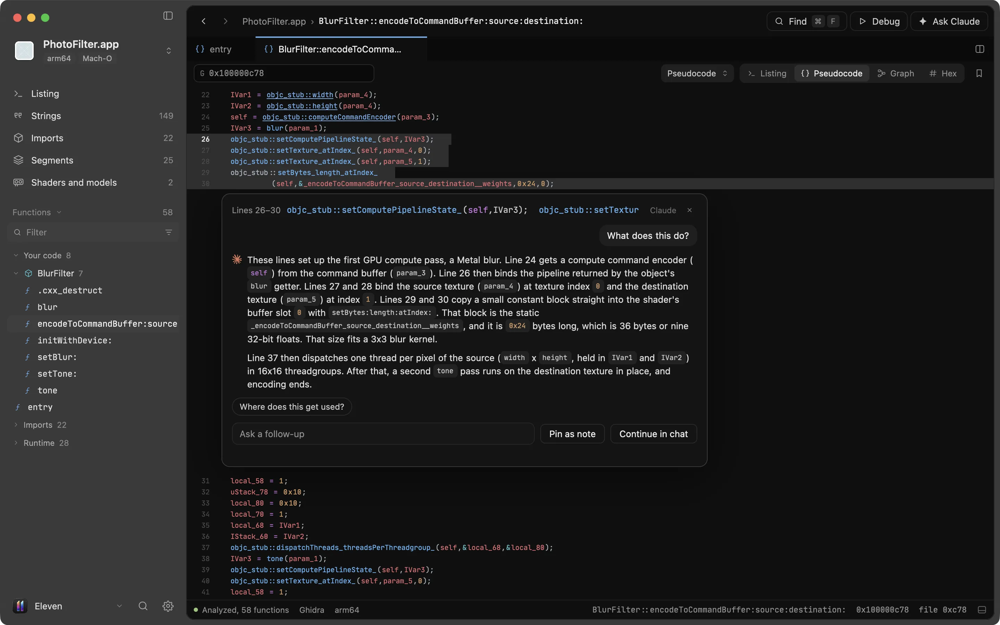
Android apps open as Java.
Unravel decompiles an app's dex code with jadx: every method as readable Java or Kotlin, the Dalvik bytecode beside it, and who calls what. A 61 MB debug build opens with 73,471 methods, and opens again in about a second.
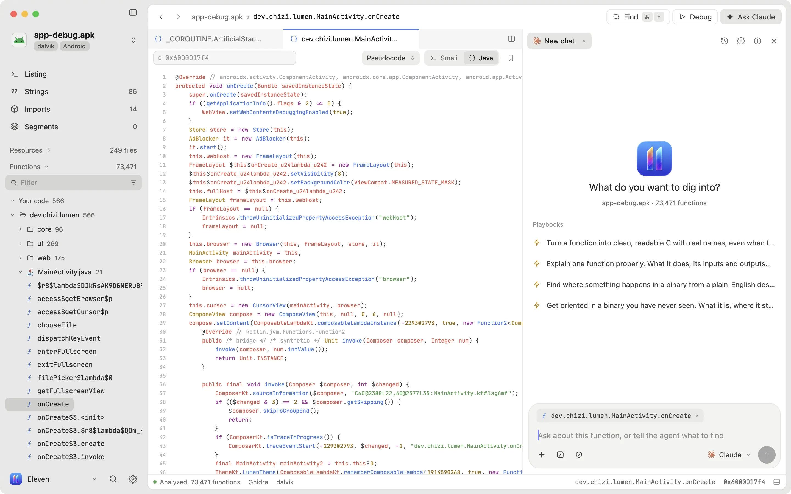
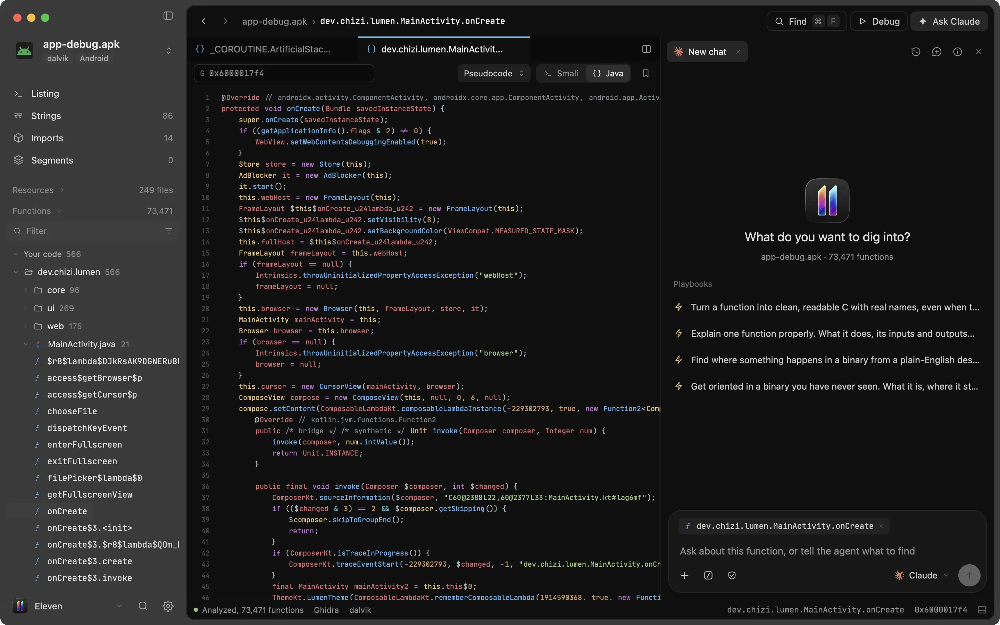
GPU kernels you can read.
Open a CUDA or HIP binary to see each kernel's PTX, its registers and parameters, and the GPUs it was built for. Your agent can rewrite a kernel as CUDA C++, HIP C++ or Metal, shown next to the PTX so you can check it line by line.
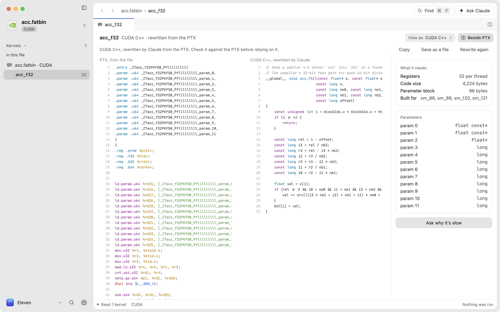
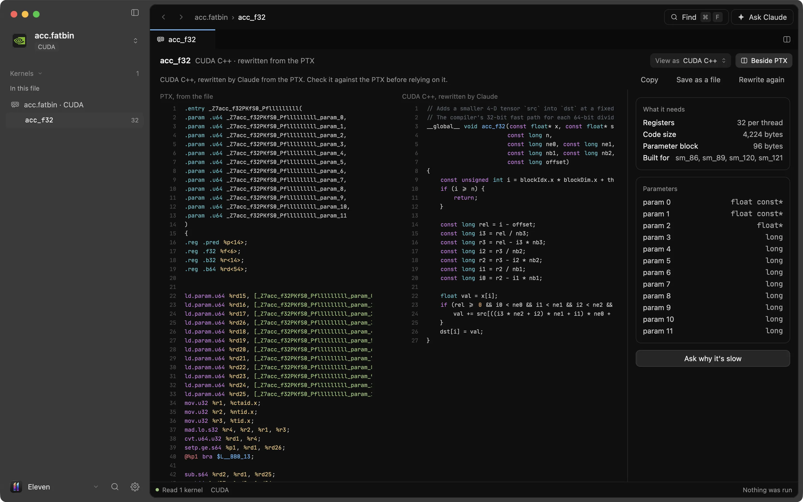
Everything an app ships.
Mach-O
Mac and iOS apps and frameworks. Universal binaries open on your Mac's slice.

ELF
Linux programs and the native libraries inside Android apps.

PE
Windows executables and DLLs.

.apk .dex
Android apps, decompiled to Java with jadx.

.metallib .air .spv
GPU shaders, linked to the code that loads them.

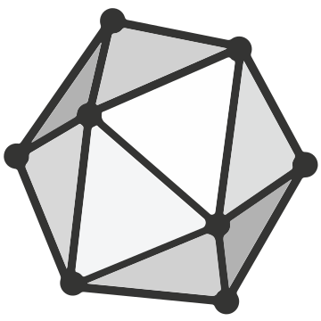

.gguf .safetensors .onnx .pt
ML models and Core ML bundles, read without running them.
Everything you and your agent need to read a binary.
Four views of every function
Pseudocode, assembly, a control-flow graph and hex, from Ghidra or Rizin.
References
Callers, callees and cross-references, one click away.
Safe patching
Byte patches go to a copy in Downloads, never over the original.
Compare builds
See which functions were added, removed or changed between two versions.
Debugger
Run it under lldb with breakpoints, the call stack and locals.
GPU profiles
Instruments recordings next to the shader source.
History
Every rename, note and patch is logged with who made it, and can be undone.
You approve changes
Agent edits arrive as suggestions you accept or decline.
Read it next to the agent.
Drop an app on the window or ask about one by name. Unravel opens it as a project, and the code, the agent and your notes stay side by side.
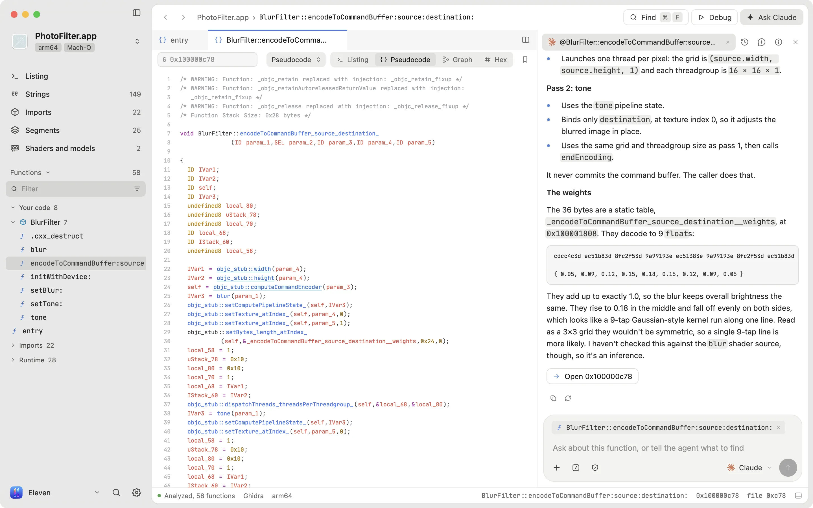
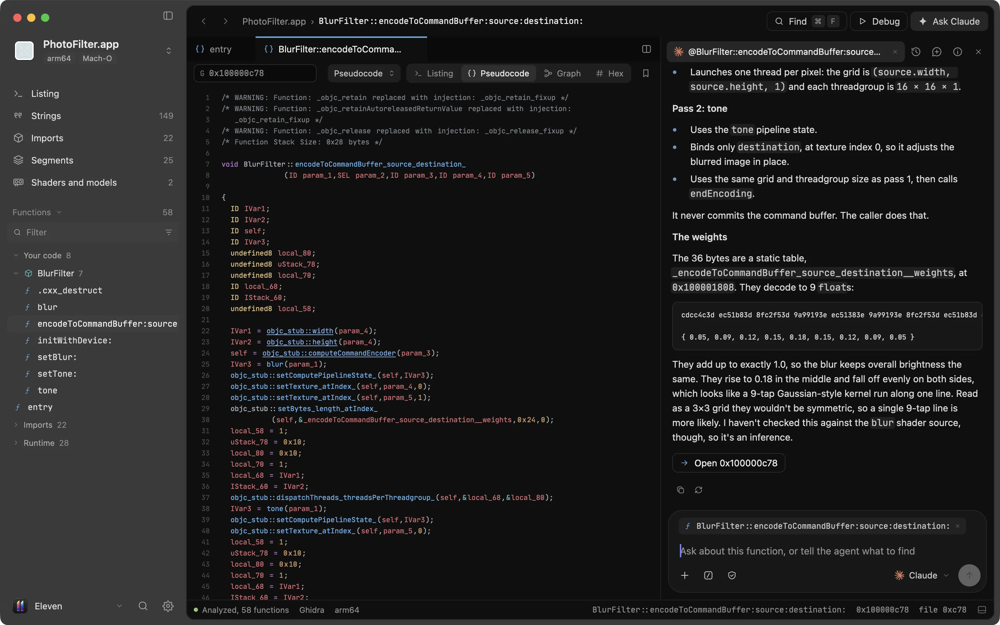
PhotoFilter.app open on BlurFilter::encodeToCommandBuffer at 0x100000c78
FAQ
Anyone who needs to know what a program really does: security researchers, developers checking a dependency, and people curious how an app works.
No. Unravel brings its own fast engine, so the first file opens right away. Java and Ghidra download in the background on first launch. The only step is signing in to your agent.
Any agent that speaks the Agent Client Protocol, including Claude, Codex, Gemini, Cursor, OpenCode and Aster. Unravel finds the ones already on your computer.
Yes. Unravel uses the agent you sign in to, on your own plan. Everything else, from reading code to patching, works without one.
Mac, iOS, Linux and Windows programs, Android apps, GPU shaders and ML models. Drop the app on the window, or ask about one by name.
No. Renames, notes and code types live in the project, and byte patches are written to a new copy in Downloads.
Yes. Every rename, note, type change and patch is logged with who made it, and ⌘Z takes it back. Turn on review and agent edits wait for you to accept them.
For the deepest pseudocode, yes, and Unravel sets it up for you. Rizin opens files in under a second without Java, and Android apps use jadx.
Yes. If Hopper or IDA is on your Mac, pick it in Settings, Analysis, and Unravel reads through it.
Yes. A project saves as one .eleven file with the binary, your notes and patches, and the chats. Send it to someone with Unravel and it opens as you left it.
Unravel itself runs locally. What your agent reads goes to that agent's provider, the same as using the agent anywhere else.
Reading, renaming, patching and debugging do, once the first launch has finished its downloads. Asking the agent needs a connection to its provider.
macOS on Apple silicon, Windows on x64, and Linux on x64 (Ubuntu 24.04, Fedora 40 or newer).
Install Unravel
Download it for your computer. The first run walks you through connecting an agent, and Java and Ghidra set themselves up in the background.
On a Mac, you can also install it from Terminal:
On Windows, you can also install it from PowerShell:
Version 0.1.13 · Linux needs Ubuntu 24.04, Fedora 40 or newer · Release notes and the .tar.gz